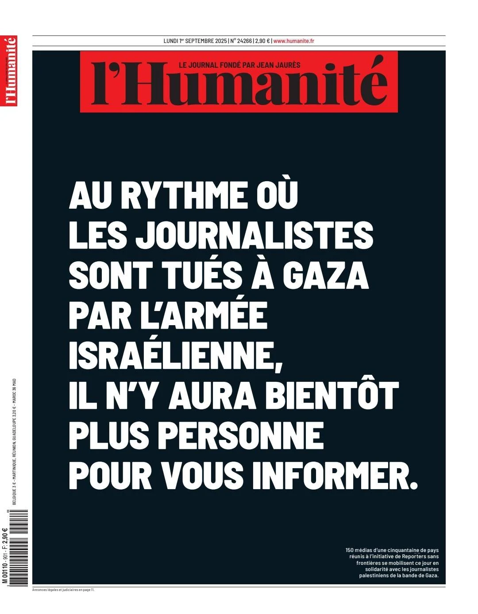
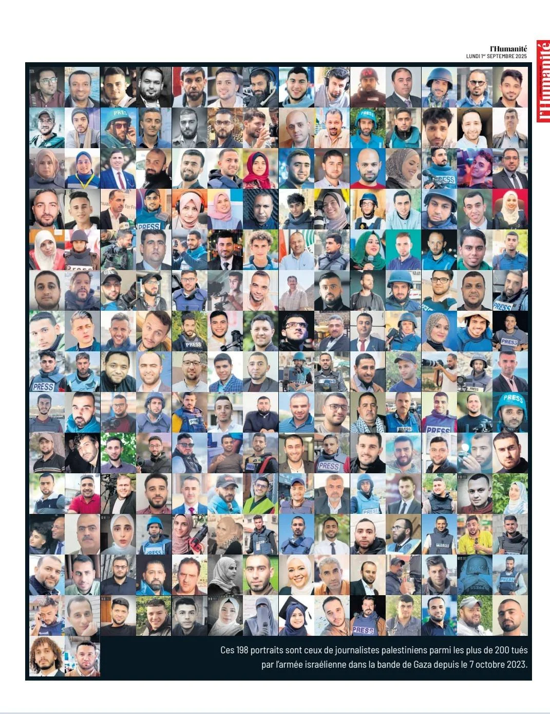

Tribune collective relayée
Gaza. Des médias se mobilisent pour les journalistes palestiniens
Date indiquée par Facebook · 1 septembre 2025
Repères éditoriaux
Le 1er septembre 2025, des médias ont participé à une mobilisation lancée par Reporters sans frontières et Avaaz. Nous avons relayé leur appel pour protéger les journalistes palestiniens et permettre à la presse internationale de travailler librement à Gaza.
Texte conservé avec la publication
GAZA - Il n'y aura bientôt plus personne pour vous informer. Au moins 200 journalistes ont été tués par l'armée israélienne dans la bande de Gaza.
En près de vingt-trois mois, plus de 210 journalistes ont été tués par l’armée israélienne dans ce territoire, selon Reporters sans frontières. Nous, journalistes de plus de cinquante médias dans le monde, dénonçons ces crimes. Et nous demandons aux autorités israéliennes d’autoriser l’accès indépendant de la presse internationale dans la bande de Gaza.
« 150 médias, répartis dans une cinquantaine de pays et réunis à l’initiative de Reporters sans frontières (RSF) et Avaaz, se mobilisent ce jour en solidarité avec les journalistes palestiniens de la bande de Gaza. Des pages entièrement ou partiellement noires en une des journaux, des bannières sur les sites d’information en ligne et des messages audio ou vidéo diffusés par les radios et les télés marquent cette mobilisation internationale.
Au moins 200 journalistes ont été tués par l’armée israélienne dans la bande de Gaza en près de vingt-trois mois, selon Reporters sans frontières. Dans la nuit du 10 au 11 août, l’armée israélienne a tué six journalistes dans une frappe ciblée et revendiquée contre le correspondant d’Al Jazeera Anas Al Sharif.
Ensemble, nous dénonçons le meurtre des journalistes par l’armée israélienne dans la bande de Gaza, dans la lignée de l’appel à l’initiative de RSF et du Comité pour la protection des journalistes (CPJ) publié en juin.
Ensemble, nous demandons aux autorités israéliennes de permettre un accès indépendant de la presse internationale dans la bande de Gaza, dans la poursuite du même appel.
À huit jours de l’ouverture de la 80e Assemblée générale des Nations unies, nous exigeons une action forte de la communauté internationale afin de stopper les crimes de l’armée israélienne contre les journalistes palestiniens. »


Sources
Archive rouge · export Facebook · AR-0002-FB-01032
À lire aussi · L’Humanité enquête sur la détention de civils palestiniens